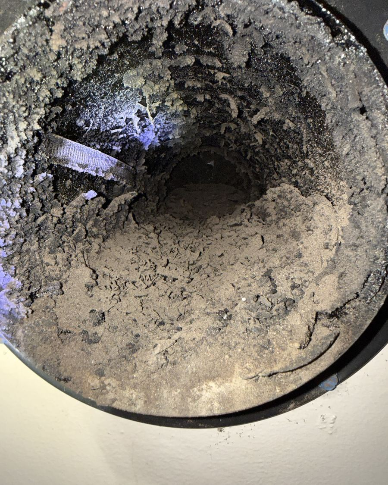

Chimney Cleaning & Sweeps
Creosote and soot removed from the flue, smoke chamber and firebox, with your home protected by drop cloths and a HEPA vacuum the whole time.
Every fire leaves behind creosote, a sticky, flammable residue that builds up inside the flue. Regular sweeping is the single best way to prevent chimney fires and keep smoke going up and out instead of into your living room.
What a sweep includes
- Drop cloths and a HEPA vacuum to keep soot out of your home
- Brushing of the flue, smoke chamber, smoke shelf and firebox
- Check of the damper, cap and visible components while we are there
- A plain-language summary of anything that needs attention
